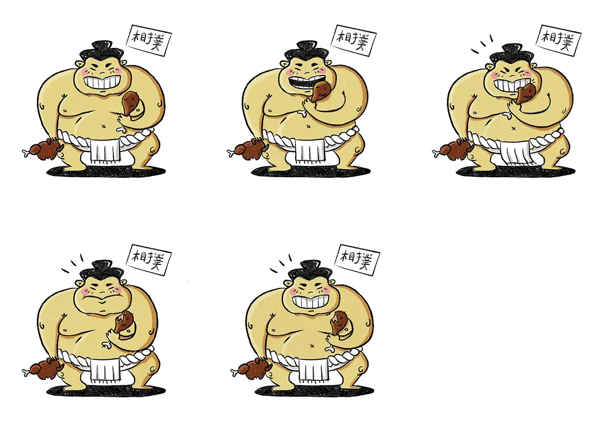

El Gallinero
Esta animación la realicé para El Gallinero, un bar de pintxos y recetas de pollo con mucha personalidad. El proyecto surgió para presentar su nueva propuesta de cocina fusión, donde el pollo —su ingrediente estrella— se mezcla con sabores orientales. Mantuve una estética muy propia y simpática, con guiños visuales que acompañan el tono divertido del local. La idea fue comunicar esta fusión de forma ligera, atractiva y con mucho sabor
